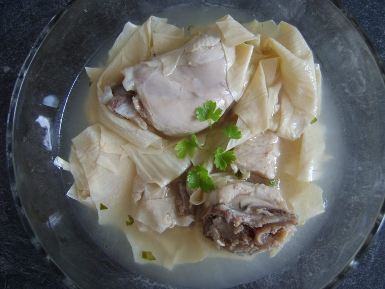

Sup Ayam Kembang Tahu
Bila anda ingin menikmati hidangan sup ayam yang enak, anda bisa mencoba membuat sup ayam kembang tahu. Resep ini sangat mudah dibuat dan bahan-bahannya pun sangat mudah didapat. Cara membuat sup ayam kembang tahu, tidak ada bedanya sama seperti membuat sup yang lain. Jadi anda yang sudah biasa memasak sup dirumah,membuat sup ayam kembang tahu ini tidak akan merasa kesulitan.
Bagi yang belum mengetahui apa saja bahan-bahan untuk membuat sup ayam kembang tahu. Disini kami akan membagikan resepnya untuk anda. Jadi anda nanti bisa mengetahui bahan-bahan yang harus dipersiapkan sebelum membuat sup ayam kembang tahu dirumah. Bukan hanya membuatnya saja yang mudah, bahan-bahan yang diperlukan membuat sup ayam kembang tahu juga sangat mudah didapat. Untuk itu bagi anda yang sudah tidak sabar ingin segera membuat sup ayam kembang tahu dirumah. Silahkan simak dan ikuti resep membuat sup ayam kembang tahu yang enak berikut ini.
Cara membuat: